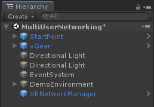
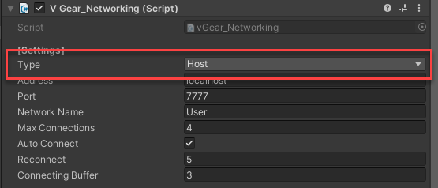
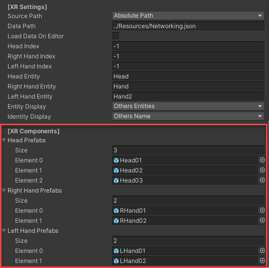
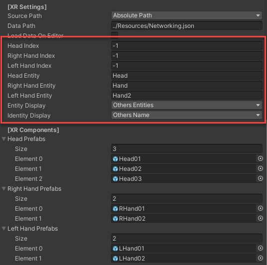
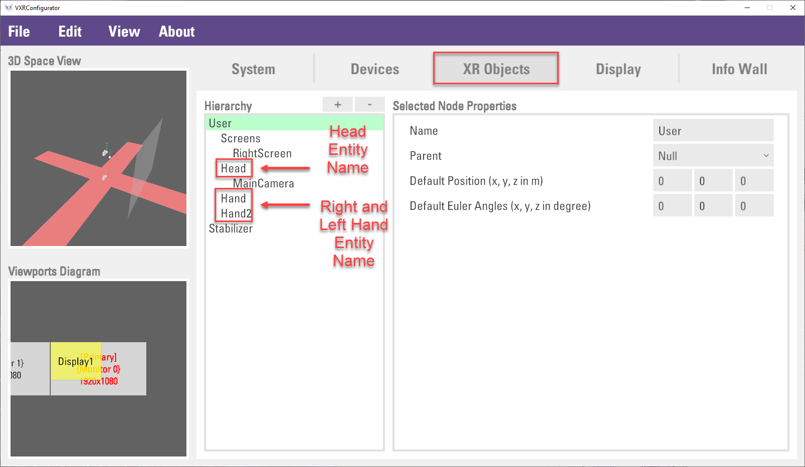
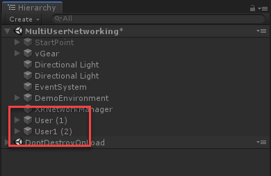

Multi-User Networking
This chapter introduces the Multi-User Networking module in VotanicXR, which provides easy access to creating network synchronized XR experience between multiple users of a networked VotanicXR application.
The networking module in VotanicXR extends Unity’s Multiplayer and Networking feature (UNet) to synchronize various networked entities among different networked users. VotanicXR uses UNet’s High level scripting API (HLAPI) with features enhanced for XR multiplayer interaction, such that there is no need for a dedicated server to facilitate the networking features.
In VotanicXR, all networked users are Clients of the application, with one of the Client assumes the role of the Host to act as a server that channels networked communication among all clients. This tutorial will be separated to four sections to illustrate the networking in the VR application.
- Host Configuration
- Client Configuration
- Adding Networked Objects
- Communication between Host and Clients
Tutorial Scene and related materials
Go to Assets > Votanic > VotanicXR_Tutorial > Tutorial07_Networking and open the scene MultiUserNetworking provided.
Host Configuration
For a multi-user VotanicXR application, one of the users (all users are clients) must assume the role of the Host to help facilitate all network communications among all users. During the multi-user gameplay session, all networked messages are directed from the clients to the Host and then relayed to other clients by the Host. Therefore, the Host must remain in the gameplay session to allow other clients to view all Networked Entities and send/receive networked messages in their own gameplay session.
This section is to illustrate the steps to setup a Host for the VotanicXR application so that other clients can connect to the multi-user gameplay session through the Host.
In
Hierarchywindows, right click and selectvGear > GameObject > XR Network Manager. AXRNetworkManagerprefab will be added in the project.
Select the
XRNetworkManagerprefeb. The main configuration of the network manager is in theV Gear_Networking(Script) > Settingssection.
For the Host, change the
Typeproperty toHost. The defaultPortfor the VotanicXR Networking is7777, and it can be changed according to the needs.
(Optional) Developer can also change the
Network NameandMax Connectionsin the setting. WhereNetwork Nameis the name of the user as seen by the other users andMax Connectionsis the maximum number of users allowed in the multi-user gameplay session. For a description of all the network manager settings, please refer to the API here.Then configure and customize the user entity. User entity is a 3D model representation of the current user in the multi-user VR world gameplay session, it is used to identify the current player in the application. By default, the user entity consists of head model, right-hand model, and left-hand model. They can be changed in the
[XR Components]section.
By default, VotanicXR provides 3 models for the Head prefabs and 2 models each for the Left Hand and Right Hand prefabs. You can expand the list with your own head and hand 3D model prefabs. Identify the head and hands prefabs which the user would like to use then configure the user entity in
[XR Settings]section.Input the
Head Index,Right Hand Index, andLeft Hand Indexcorresponding with the prefab index in the[XR Components]section. Note: TheHead,Right HandandLeft HandIndex is starting from 0, they correspond to the element index under each of the prefab list. SoHead Index= 1 refers to using theHead02model in the above example.
Note: For performance issue, developer can also set up a standalone machine to act as the Host, and have all other clients connect to it using its IP address. In this way, the standalone machine functions as a dedicated server. To hide the 3D model of the dedicated server user in the multi-user gameplay session, set the
Head Index,Right Hand Index, andLeft Hand Indexto-1so that no 3D model will be used for this user.Modify
Head Entity,Right Hand Entity, andLeft Hand Entityto match the correspondingXR Objectsname in theconfig.vxrcfile. Navigate to the config path as specified invGearGameObject’sConfig Pathand open the config using the VotanicXR Configurator.In the
Configurator, go toXR Objectstab and check the name of head, right-hand and left-hand entity under theUsernode. If you have not customized the config file, the entities are namedHead,Hand, andHead2for the head, right-hand and left-hand entity, respectively.
Finally, the
Entity DisplayandIdentity Displayproperties is to control the visibility of other players in the VR world. The default setting is showing other players’ name and model. Details of the options offered under these properties can be learned in the API documentation here (entity display) and here (identity display).Build the application for further testing.
(Optional) Change the network manager configuration using an external setting file. Apart from using the NetworkManager API, it is also possible to override the settings in
V Gear_Networking (Script)using a networking setting json file. Using the setting json file allows the application to change the network manager’s settings after the application is built. The default path for the setting file is at an external folder outside the build executable folder at../Resources/Networking.json, VotanicXR will use the settings specified in the file if such a file exists at the Data Path. This json path and name can be configurated in[XR Settings] > Data Pathproperty.The below code block shows the format of the networking.json setting file.
{ "Type": "Host", "IP": "localhost", "Port": 7777, "UserName": "User", "AutoConnect": true, "Reconnect": 5, "Buffer": 3.0, "Head": 1, "RightHand": 1, "LeftHand": 1, "HeadEntity": "Head", "RightHandEntity": "Hand", "LeftHandEntity": "Hand2", "EntityDisplay": "OthersEntities", "IdentityDisplay": "OthersName" }Note: In networking, it requires a Host and a Client to test the connection. However, as the Unity editor cannot open two instances, it is better to build the application first and use both the Unity Editor and the build simultaneously if you want to test the multi-user features on the same computer.
Client Configuration
This section is to illustrate the steps to set up a Client in VotanicXR networking module and connect to the Host which was created in the previous section.
In principle, a Client is configured the same way as a Host in the VotanicXR Network Manager. There are just a few differences in properties between a Client and a Host. The key differences are the Type, Address, Port and Network Name properties in the [Setting] section. A summary of the Client setting is described below.
Type: Client
Address: server’s address
Port: same as the port number in server application
Network Name: for player identification
The below code block shows the format of the networking.json setting file for client executable.
{ "Type": "Client", "IP": "localhost", "Port": 7777, "UserName": "User1", "AutoConnect": true, "Reconnect": 5, "Buffer": 3.0, "Head": 1, "RightHand": 1, "LeftHand": 1, "HeadEntity": "Head", "RightHandEntity": "Hand", "LeftHandEntity": "Hand2", "EntityDisplay": "OthersEntities", "IdentityDisplay": "OthersName" }
Note: in this example, as we are testing both the Host and the Client on the same machine, the Address is both set at localhost. In real scenarios, the Address for the Host should be localhost and the Address for the Client should be set as the Server’s IP address.
To test the multi-user feature, we will run the application as Host in Unity Editor and the Build executable as Client.
Run the scene in the Unity Editor using the settings shown in the
Host Configurationsection.Open the VotanicXR application’s executable file. It will run using the settings defined in the
Client Configurationsection.After the Client connects to the Host, you will see other networked player(s) in the shared VR world.
Client Game Window Host Game Window Host Scene Window 
In the Unity Editor’s Hierarchy, you can see new GameObjects
UserandUser1with theNetwork Nameused, are added to the hierarchy when the connection is established.
Adding Networked Objects
Networked objects are GameObjects which are controlled and synchronized via the networking system to each networked client’s application. This section illustrates how to create a networked object.
Adding In-Scene Networked Objects
Create a cube in the scene.
Right click the cube and select
vGear > Component > NetworkObject.Network Identity (Script) (Deprecated)andNetworked Object (Script)will be added to the cube.
Check the
Local Player AuthorityinNetwork Identity (Script)(Deprecated)to enable the object accessible to player.In the
Networked Object (Script), you may adjust the networking properties of the GameObject.(Optional) The
Cubecan be configured as an interactable object to interact with players in the VR world. The interaction of GameObject is introduced in Interact with Virtual World chapter.Build or play the scene. you may see the cube object is synchronized in both applications.
Client Game Window Host Game Window Host Scene Window 
Note: As the networked objects uses UNet’s
Network Identitycomponent, all networked objects are only visible when the Client connects to the Host, and they will all be destroyed when the Host left the gameplay session.
Adding Spawnable Networked Objects
Aside from the in-scene networked objects, it is possible to spawn networked objects in run time using the Spawn Prefabs list, which extends UNet Network Manager’s spawn management feature. Below we provide an illustrative example to show how to turn the Cube networked object created in the previous section into a spawnable networked object and use in VotanicXR multi-user application.
Convert the cube into a prefab
Add the cube prefab to the
Spawn Prefabslist
Add a
NetworkControllerGameObject, then create aNetworkControllerScriptscript to spawn the object in run timevGear_Networking NetworkingManager; GameObject cube; void Start() { NetworkingManager = GameObject.Find("/XRNetworkManager").GetComponent<vGear_Networking>(); } void Update() { if (vGear.Cmd.Received("Trigger") && cube == null) { cube = Instantiate(NetworkingManager.spawnPrefabs[0]); NetworkServer.Spawn(cube); } }Test the feature

Communication Between Host and Clients
VotanicXR provides a simple way to send networked commands among all users of a multi-user gameplay session. This feature can be applied to two typical use cases: send/receive networked commands as a chat function or send/receive networked instructions to synchronize non-networked object events.
Send/Received Networked Messages
One straightforward implementation of VotanicXR’s networked command feature is to use it as a network messenger among all clients in the multi-user gameplay session. The following is an example demonstrating how a networked command is sent from the Client to the Host, and the Host displaying the networked command in the debug log.
Create an empty GameObject and named as
NetworkCommandController, then create and attach a C# scriptNetworkCommandScriptto theNetworkCommandController.
In the
NetworkCommandScriptscript, input the below code to send a command when user press grab button.vGear_Networking NetworkingManager; void Start() { NetworkingManager = GameObject.Find("/XRNetworkManager").GetComponent<vGear_Networking>(); } void Update() { // Send a command via network if (vGear.Cmd.Received("Grab")) { NetworkingManager.Send("Greeting"); } }To receive the command, we can register a function to
ReceivedMessagedelegate in thevGear_Networking. The above code can be extended as belowvGear_Networking NetworkingManager; void Start() { NetworkingManager = GameObject.Find("/XRNetworkManager").GetComponent<vGear_Networking>(); NetworkingManager.ReceivedMessage = PrintReceivedCommand; } void Update() { // Send a command via network if (vGear.Cmd.Received("Grab")) { NetworkingManager.Send("Greeting"); } } void PrintReceivedCommand(string message) { Debug.Log("Command received: " + message); }Finally, build the app and test the result. In the console, you can see the command send and receive.

Send/Receive Networked Instructions for non-Networked Object Events
In a multi-user networked application, it is not advisable to have large number of networked objects, as synchronizing the states of large number of networked objects would have a major impact to the performance of the application. Unless the object is needed for networked multi-user interaction (as networked Interactables) or required to precisely synchronize its states in real-time, it is often more preferred to synchronize the Events of an object using network commands.
For example, when one of the clients presses a button, a box in the shared VR world will rotate itself. Instead of configuring the box object as a networked object and synchronize its transform in real-time, developer can simply send a network command that invokes a function to move the box in each of the clients’ own scene. In this way, the amount of networked traffic is reduced.
Below we demonstrate how one can make use of the network command to re-create the example above.
Create a GameObject
Rotation Cubein the scene.Create a GameObject
Rotation Buttonin the scene, attachV Gear_Interactablescomponent with CommandButton.In the
NetworkCommandScript, modify the code as below.vGear_Networking NetworkingManager; GameObject RotationCube; bool isCubeRotating = false; void Start() { NetworkingManager = GameObject.Find("/XRNetworkManager").GetComponent<vGear_Networking>(); NetworkingManager.ReceivedMessage = PrintReceivedCommand; RotationCube = GameObject.Find("/Rotation Cube"); } void Update() { // Send a command via network if (vGear.Cmd.Received("Grab")) { NetworkingManager.Send("Greeting"); } // Send "DoRotation" after receive "button" if (vGear.Cmd.Received("Button")) { NetworkingManager.Send("DoRotation"); } if (isCubeRotating) { RotationCube.transform.Rotate(1f, 0f, 0f); } } void PrintReceivedCommand(string message) { Debug.Log("Command received: " + message); if (message.Contains("DoRotation")) { isCubeRotating = !isCubeRotating; } }Build and test the result.